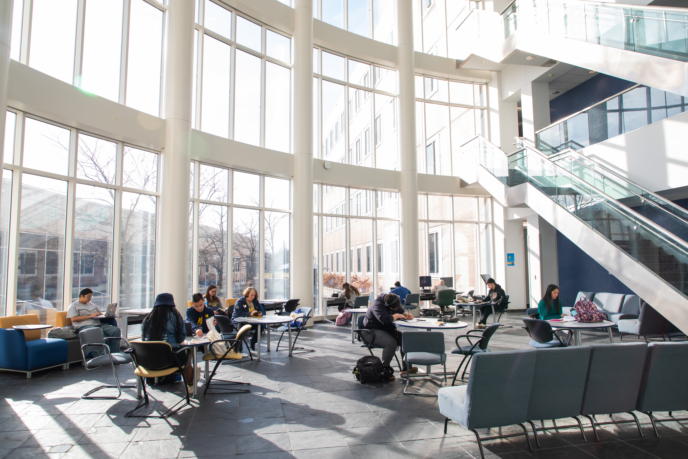
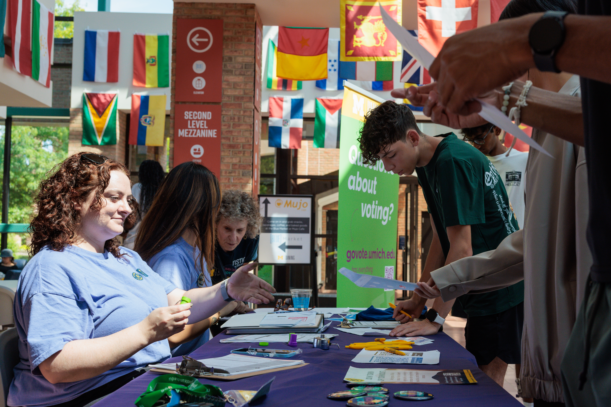
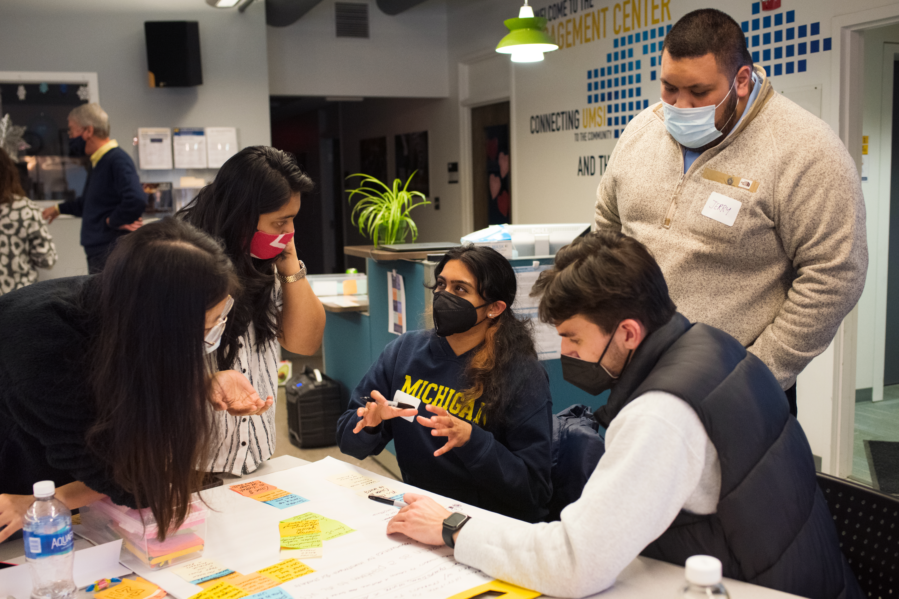
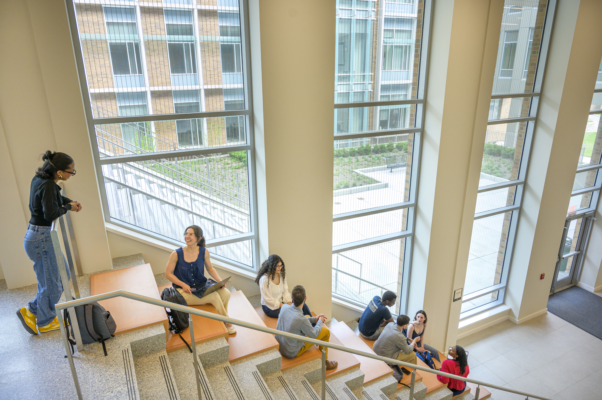
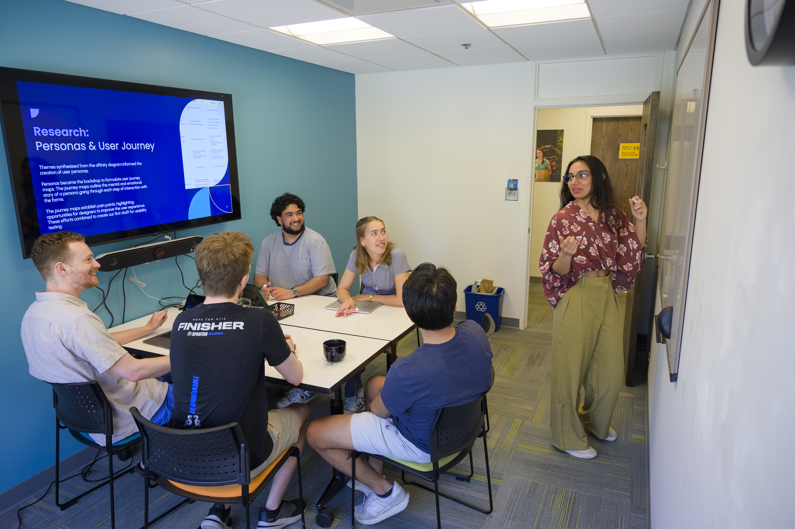
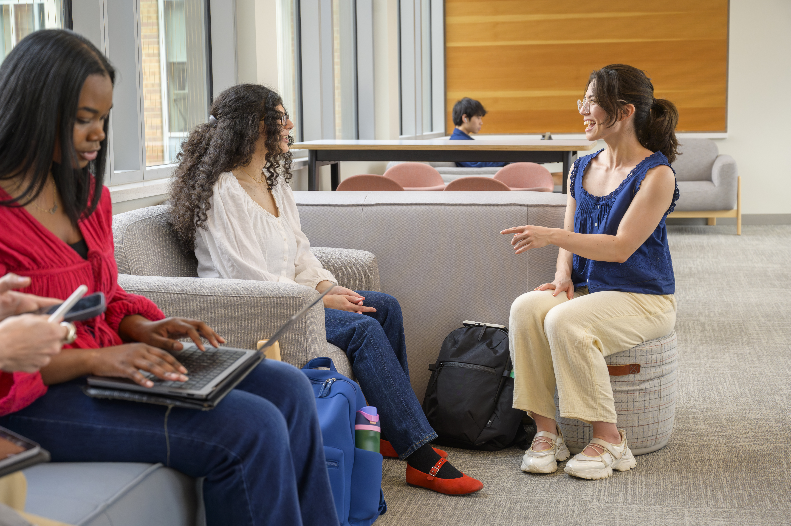

Engaged Learning Office
Leinweber Computer Science and Information Building
University of Michigan
2200 Hayward Street
Ann Arbor, MI 48109
Phone: (734) 936-8735
[Contact the Engaged Learning Office →] Campus Resources
Campus ResourcesFinding and completing an engaged learning experience doesn't have to be something you do alone.

Your starting point for engaged learning at UMSI.
The Engaged Learning Office works with organizations across industries and sectors to create project-based opportunities for UMSI students.
Leinweber Computer Science and Information Building
University of Michigan
2200 Hayward Street
Ann Arbor, MI 48109
Phone: (734) 936-8735
[Contact the Engaged Learning Office →]
Turn Experience Into Opportunity.

UMSI's Academic Success team provides support tailored to students' individual needs, including students with disabilities, transfer students, first-generation students, and student caregivers.
[Explore Academic & Student Support →]U-M's Student Accessibility and Accommodation Services provides support for disabled students, including academic and housing accommodations.

The Disability Equity Office works across the University of Michigan to advance accessibility and disability inclusion.
Students can also use university resources to report physical or digital barriers to access.
[Report an Accessibility Barrier →]
Build Information Experiences Everyone Can Use.
As UMSI students, you may design websites, applications, databases, data visualizations, research studies, and information systems.
Accessibility should be part of that work.
Explore U-M resources for:

Need research support?
Explore U-M Library resources for:

Some engaged learning experiences require funding for:
Explore university and school-level funding opportunities.
[Find Funding →]Engaged Michigan also maintains information about funding opportunities for interdisciplinary research and community-engaged projects.